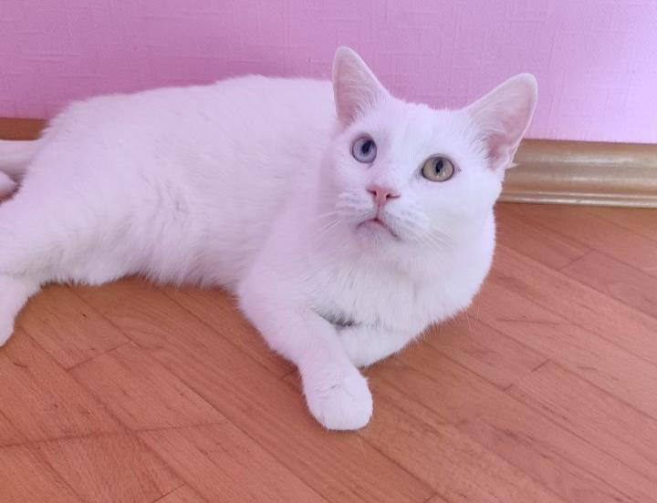

Белый кот с разными глазами — интересная порода или мутация? Кошки с разноцветной радужкой глаз всегда вызывали у людей неоднозначную реакцию. В древности одни считали ихдьявольским отродьем и уничтожали, чтобы защитить дома от злых сил, другие — наоборот, пытались сохранить,считая, что такие кошки приносят удачу. Со временем отношение к этим удивительным созданиям кардинально поменялось. Сегодня кошки с гетерохромией, а именно такое научное название имеет это явление, ценятся на вес золота.Животные с разными глазами встречаются в основном среди таких пород как као мани, ангора, турецкий ван, режесреди ориентальной, британской, шотландской, персидской, экзотической кошек, кошек группы рекс и сфинксов.Обязательное условие наличия гена гетерохромии — белоснежная шерсть. Почему могут быть глаза разного цвета.Научное название разноцветных глаз у животных и людей в том числе — гетерохромия. Это не болезнь, а всего лишьрезультат избыточной или недостаточной выработки меланоцитовых клеток, которые отвечают за пигмент меланин ивзаимосвязаны с окрасом шерсти. Мутация зачастую наблюдается у кошек с белым окрасом, но при этом их не относятв категорию альбиносов. Гетерохромия встречается и у тех кошек, у которых в окрасе преобладает белый цвет. Уостальных представителей семейства кошачьих разноцветные глаза встречаются редко. К гетерохромии предрасположены особи с геном W. Закономерность явно прослеживается на животных с белым пятном нарадужке одного глаза. В таком случае обычно происходит изменение цвета радужки.Обратите внимание! Пород кошек с разным цветом глаз не существует. Специалисты лишь выделяют несколько пород,которые предрасположены к гетерохромии. Существует еще одно редкое явление — химеризм, когда в организме сочетаются гены двух разных окрасов. У такихживотных каждый глаз будет соответствовать одному из генов. Например, в США живет «двуликая» кошка по кличке Венера, а в Аргентине — прекрасная Химера. Генетики исследовали ген разноцветности и пришли к выводу, что он никоим образом не влияет на качество зрения. Однако белоснежные кошки с гетерохромией склонны к полной или частичной потере слуха, при этом истинно белые коты не слышат на ухо, расположенное со стороны голубого глаза. Породистых животных с такой патологией не допускают к разведению. У котят истинный цвет радужки устанавливается к 3-4 месяцам, поэтому, даже если малыш и унаследовал мутационный ген, определить это сразу не получится. Термин «гетерохромия» имеет греческое происхождение и переводится как «другой цвет» или «разный цвет». Существует несколько видов разноглазости: Гетерохромия бывает частичной, когда на радужке одного или обоих глазах наблюдается пятно другого цвета. Такие глаза называют дихроическими. Секторная — она часть радужки окрашена в иной цвет. Кольцевая — внешний край радужки обрамлен кольцом другого цвета. Полная — один глаз животного окрашен в янтарный, медный, зеленый, оранжевый цвет, а другой — всегда голубой. Справка. На английском языке глаза разного цвета называют odd eyes — «странные глаза». Породы с разными глазами. Фелинологи выделяют несколько пород кошек, предрасположенных к гетерохромии: као мани, турецкая ангора и турецкий ван, персидская, ориентальная и экзотическая кошки, белоснежные «британцы» и «шотландцы», представители группы рекс и сфинксы. Као мани Као мани — аборигенная порода кошек с разными глазами родом из Таиланда. Эта атлетичная, гибкая, изящная кошка пользовалась особой популярностью среди знатных особ и королей. Несмотря на то, что история ее развития и становления занимает несколько веков, официальное признание као мани получила лишь в 2009 году, а стандарт породы CFA опубликовали на сайте Ассоциации любителей кошек в 2018 году. Порода малоизвестная, считается одной из редчайший в мире, а на территории РФ нет ни единого питомника. Стандарт породы предписывает, что животные должны иметь исключительно белую шубку и яркие, сияющие глаза любого цвета — от ярко-голубого до медного. Кроме того, допустимы глаза разного цвета. Стоит отметить, что, несмотря на предрасположенность као мани к гетерохромии, котята с разноцветной радужкой внутри породы рождаются редко, и ценятся они очень высоко. Кошки весьма общительны, умны, активны, но тяжело переносят одиночество вплоть до депрессии. Справка. Название као мани переводится как «белая жемчужина». Животные привлекают внимание удивительно красивыми бездонными глазами, сияющими словно два драгоценных камня. Источник: https://moikoty.ru/porody/belyj-kot-s-raznymi-glazami
